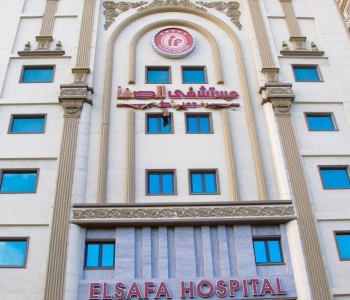

التبرع بالدم
التبرع بالدم هو عملية تتمثل في تقديم وحدة من الدم من فرد إلى آخر لغرض
مساعدة الأشخاص الذين يحتاجون إلى تلقي الدم. يُعتبر التبرع بالدم ممارسة
إنسانية رائعة وضرورية لضمان توفر الدم بشكل دائم للمرضى الذين يعانون من
فقر الدم أو يحتاجون إلى عمليات جراحية أو علاجات أخرى.
توجد العديد من الأسباب التي تجعل التبرع بالدم ضروريًا، بما في ذلك:
1- الحوادث والطوارئ الطبية: مثل حوادث السيارات والحوادث الطبيّة الأخرى
التي قد تتطلب تلقي الدم بسرعة.
2- الأمراض المزمنة: مثل فقر الدم وأمراض الدم الأخرى التي تتطلب علاجًا
متواصلًا بواسطة نقل الدم.
3-الجراحات: قد تحتاج الجراحات الكبرى إلى كميات كبيرة من الدم لتعويض
الفقدان أثناء العملية الجراحية.
4- الأمراض الوراثية: مثل فقر الدم المنجلي والثلاسيميا، حيث قد يحتاج
المصابون بهذه الحالات إلى نقل دم بانتظام.
5- علاج السرطان: بعض علاجات السرطان مثل العلاج الكيميائي يمكن أن تؤدي
إلى نقص في خلايا الدم، مما يجعل تلقي الدم ضروريًا.
يمكن لأي شخص تقريبًا التبرع بالدم شريطة أن يكون في حالة صحية جيدة
ويستوفي المتطلبات الطبية والصحية المحددة. تتطلب عملية التبرع بالدم
فحصًا طبيًا سريعًا للتأكد من سلامة المتبرع وصحته. عادةً ما يتم تقديم
المكافآت أو الهدايا الرمزية للمتبرعين كشكر لتفضيلهم. من المهم أن يتم
التبرع بالدم بانتظام لضمان توفر الدم اللازم للمرضى في الحالات الطارئة
والمخططة. تعتبر حملات التبرع بالدم والتوعية حول أهميتها جزءًا أساسيًا
من الجهود الصحية المجتمعية.
تبرع الآن...
